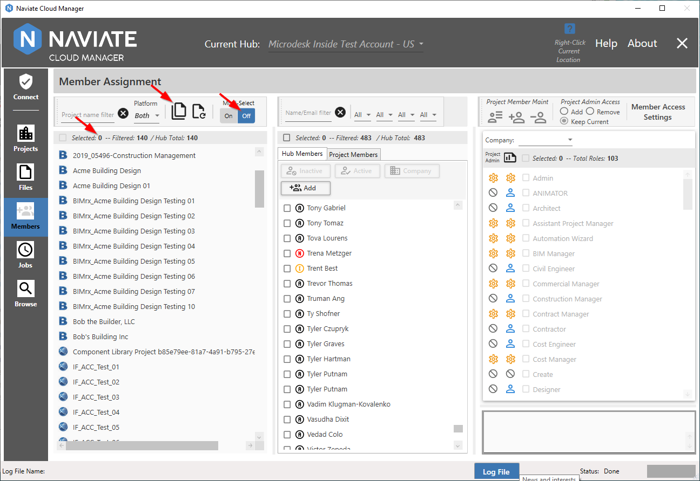
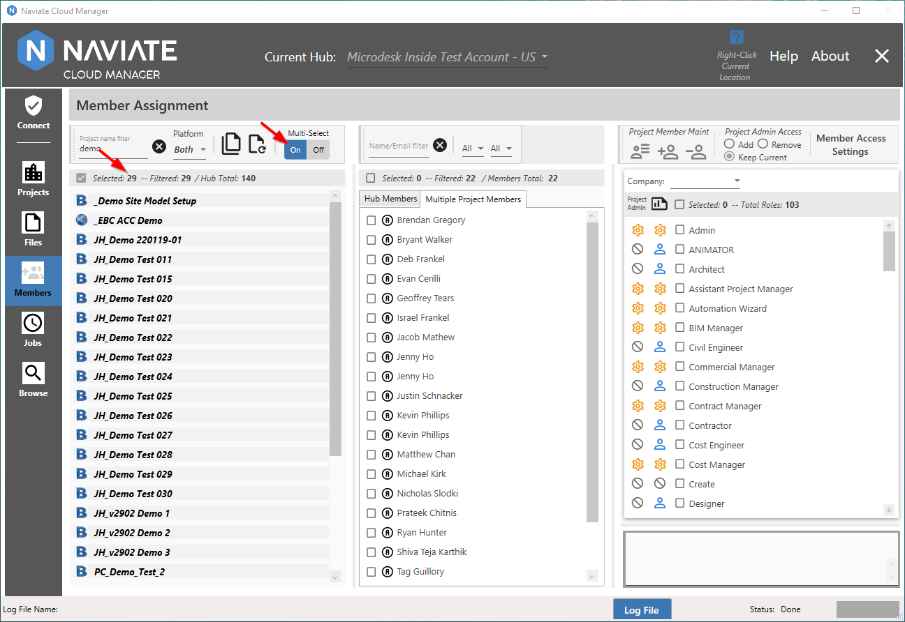
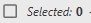
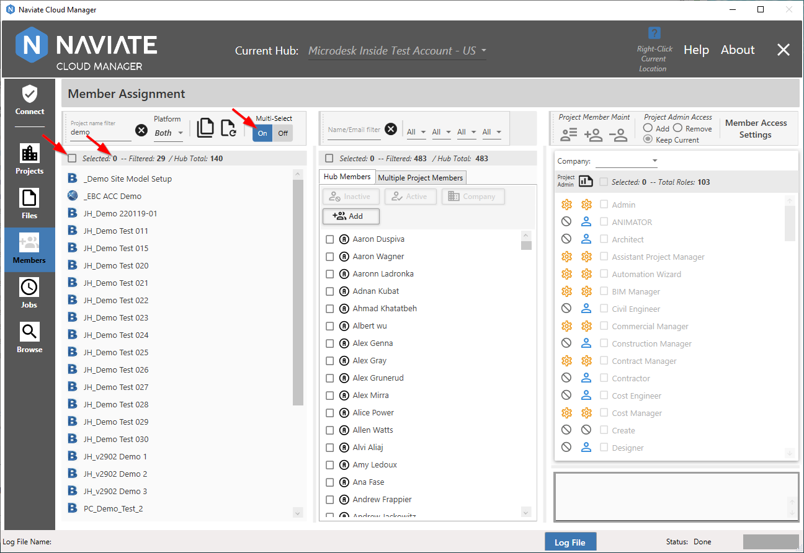
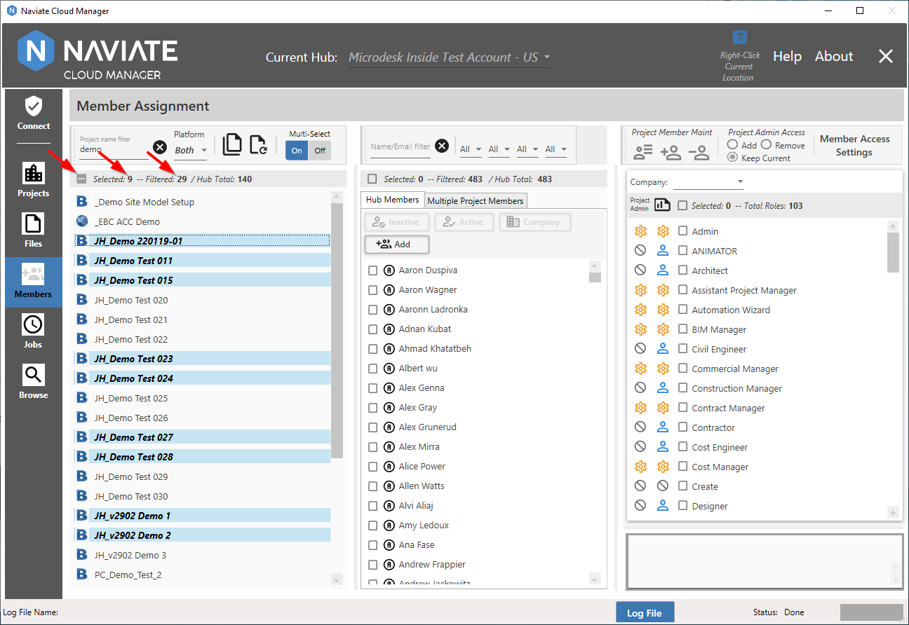
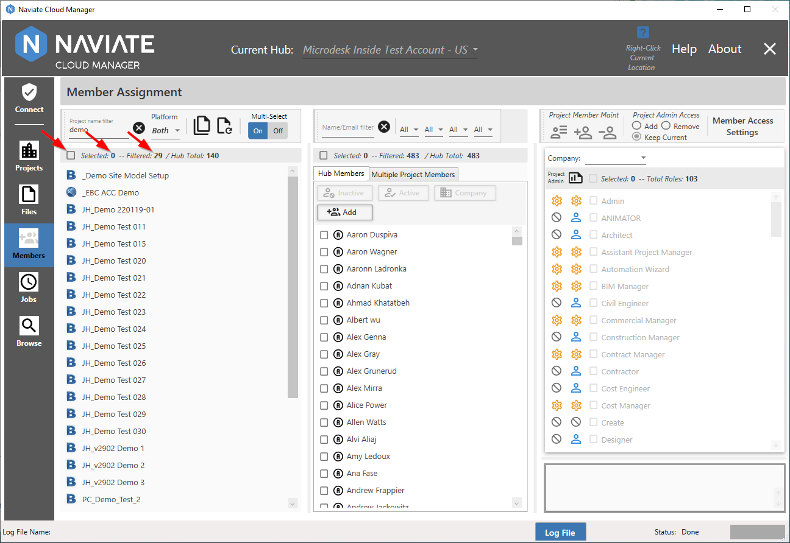
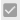

Select All Projects
The Select All Projects button provides a fast and easy way to select all projects for the current Hub.

The Select All Projects button can be pressed regardless of the current Multi-Select setting.
As shown below, if set to Single Project selection and Select All Projects is selected, Multi-Select automatically changes to Multiple, then the select all process is performed.

It is important to note that when performing Select All, the current filter is applied and only filtered items are selected. If no filter is currently applied, then all projects for the current Hub are selected.
Please Note — The Filtered total to the right of the Selected total is a separate number and operates independently of the Selected total. Additionally, the Hub Total quantity shows all projects for the current Hub, to assist in comparing the quantities that are filtered and/or selected.
Another way to perform Select All is to use the Selection

checkbox. The difference here, though, is that it is enabled only when Multi-Select is first set On (i.e., to Multiple). When set to Off (i.e., Single), this checkbox is disabled and unavailable.With the checkbox disabled, it is unavailable. This makes perfect sense since, by definition, in Single select mode only one project at a time may be selected.
However, when set to Multiple, it is enabled and ready for use.

At this point, clicking once on the checkbox selects all currently filtered projects.
As shown, the result is now the same as if the Select All Projects button was pressed.
The checkbox, however, provides more functionality than just selecting all. If more than one project is selected, but less than all, it serves as a multiple selection indicator and appears as  .
.

Whenever the checkbox is enabled and appears as the 'minus' sign, as above, manually checking it deselects all projects, as shown below.

The checkbox is a three-state control. With it unchecked  , checking it once selects all projects and sets the checkbox to
, checking it once selects all projects and sets the checkbox to

. Checking it again leaves the selection unchanged, but changes the checkbox state to. As seen above, this is the same as when a multiple selection is made manually. Finally, clicking it a third time deselects all projects and returns it to the initial, 0 records selected state.
Note — The Selected button is a 3-state control and, when directly clicked, functions the same as similar buttons found elsewhere throughout Naviate Cloud Manager:
|
Button state before clicking |
Button state before clicking |
Result |
|
|
|
All currently visible projects are selected. If no filter is set, then all projects are selected. If a filter are set, only those rows displayed by the filter are selected. |
|
|
|
No change occurs. Button can also arrive at this setting as a result of manually unchecking one or more of the projects when all projects have been checked. |
|
|
|
All projects are deselected, regardless of filter setting. |